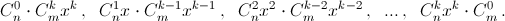

Can you find
a) in the 100th line of Pascal’s triangle, the number 1 + 2 + 3 + ... + 98 + 99?
b) in the 200th line the sum of the squares of the numbers in the 100th line?
a) The first way. $1 + 2 + 3 + … + 98 + 99 = \frac{100 \times 99}{2} = C^2_{100}$.
The second way. See problem number 30713, the solution to which is the following.
The number a is equal to the number of paths leading from the vertex O of Pascal’s triangle to the place A, where there is the number a is $($see problem number 30710$)$. Each such path passes through the indicated right diagonal. Suppose that there are numbers $b_0, b_1, ..., b_k$ at the points $B_0, B_1, ..., B_k$ above the point A. Points O and $B_i$ connect bi paths. Each of them can be reduced to A in the only way: go to the next diagonal and descend along it to the point A. Therefore,
$a = b_0 + b_1 + ... + b_k$.
b) See the problem 60413 c). In the equality $(1 + x)^{m + n} = (1 + x)^n (1 + x)^m$, the monomial $C^k_{m+n}$ on the left hand side is the sum of monomials 
See the solution above.